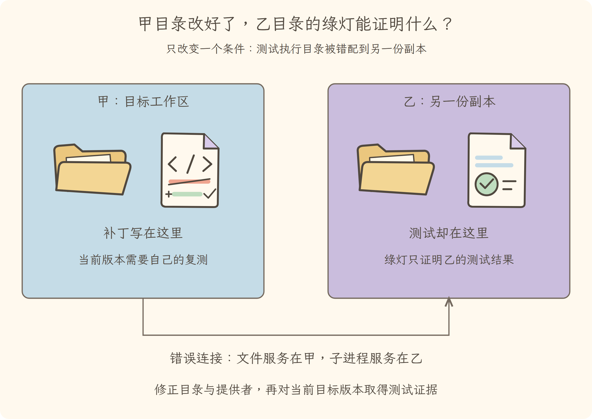
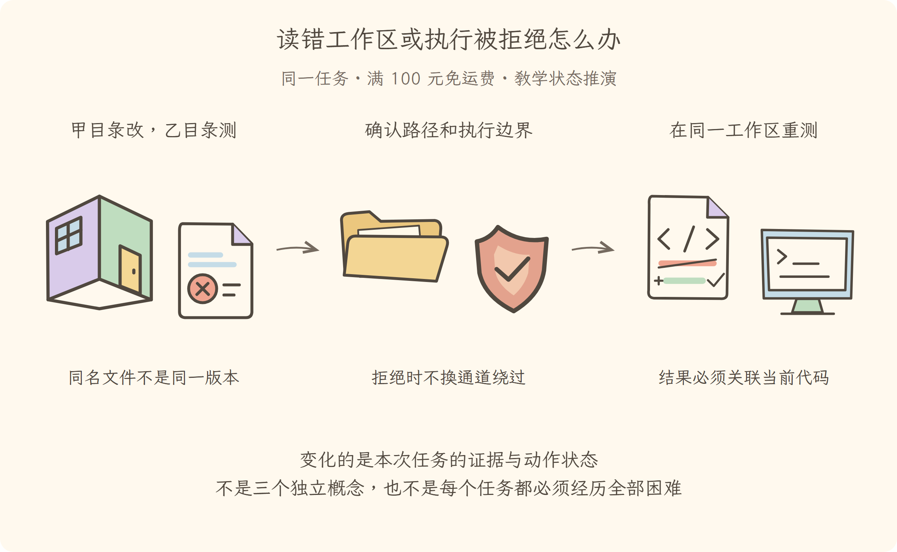

学习导航
第07讲 · 读错工作区或执行被拒绝怎么办
源码基线：cd5ef8148158c3a752a658978873241fdf8e2bbc。业务案例为虚构 Java 运费服务；图与流程是教学推演，源码事实另有固定证据。
从这里接上
模型知道要改什么，但执行世界和权限还未确认。本讲要回答：读错工作区或执行被拒绝怎么办？
上一讲解决了“加载方法说明，并分清手册、工具和外部协议接入”；这仍不能代替本讲要补的责任。
阅读与完成标准
先看逐步讲解，再做练习。视觉课件用于复习，词典随用随查，不要求先背英文。预计正文阅读 20–35 分钟，练习 10–20 分钟；这是安排建议，不是学会的证明。
读完应能解释：工作区相同的名字可以证明在同一份文件上测试吗？ 还要能预测：平台无法提供要求的沙箱约束时，可以关闭限制再试吗？ 最后从源码证据定位相应责任。
现在必须懂的是本讲怎样改变证据或动作状态；具体框架中的其他选项知道存在即可，不用一次读完整个包。语法卡住可查补课 A、补课 B，工程定位查补课 C，看完返回此处即可。
工程深度验收
能沿工具、服务、执行器、操作系统、Java 分层定位失败；能识别编辑和测试工作区错配。 先预测练习中的分支，再按正文命令观察；只读解释、测试替身和真实执行环境分别记录，不混为一项。
本讲交接
在正确工作区、明确边界内尝试动作；拒绝不降级绕过。但下一步还要解决：关掉后再打开，能从哪一步继续。
← 第06讲：技能与外部接入 · 第08讲：中断恢复 →
视觉课件
第07讲 · 读错工作区或执行被拒绝怎么办
工程图解：甲目录改好了，乙目录的绿灯能证明什么？

能沿工具、服务、执行器、操作系统、Java 分层定位失败；能识别编辑和测试工作区错配。 本图与原有场景图互补，具体分支与边界见逐步讲解。
源码基线：cd5ef8148158c3a752a658978873241fdf8e2bbc。业务案例为虚构 Java 运费服务；图与流程是教学推演，源码事实另有固定证据。
当前现场
模型知道要改什么，但执行世界和权限还未确认。固定业务约定不变：满 10000 分免运费；原实现在等于时返回 800。禁止用修改预期的方式让测试变绿。

三分钟复述
先描述左格缺什么，再说明中格采取的机制，最后指出右格新增了哪些证据或责任。在正确工作区、明确边界内尝试动作；拒绝不降级绕过。不要只读图上的物件名；删掉中间这项机制，任务会在哪一步失去依据？
本讲最容易误会的是：平台无法提供要求的沙箱约束时，可以关闭限制再试吗？ 不能把它作为自动替代。应报告限制，查明可支持路径或取得所需新授权；未验证不报通过。
从图返回源码
图只表达教学关联与状态变化，不代替完整调用顺序。源码定位提供实现或契约证据，正文解释映射和边界。
← 第06讲：技能与外部接入 · 第08讲：中断恢复 →
逐步讲解
第07讲 · 读错工作区或执行被拒绝怎么办
源码基线：cd5ef8148158c3a752a658978873241fdf8e2bbc。业务案例为虚构 Java 运费服务；图与流程是教学推演，源码事实另有固定证据。
一、同名文件不一定是同一份实现
第六讲让助手拿到排查手册和可能的外部工具。现在故意增加一个困难：机器上有两个运费服务副本，一个已修改，一个未修改。如果助手在甲目录编辑，却在乙目录运行测试，绿色报告仍不能证明甲目录的修改正确。
Filesystem（文件系统能力）和 Subprocess（子进程能力）需要处于一致的执行世界：相同的工作目录语义、路径约定和文件状态。目录不是装饰性参数，而是证据身份的一部分。
三格为同一运费任务的教学状态变化或故障对照。图不是实际运行日志；关键区别见各格说明。
二、工作区、服务范围、沙箱不是同一道墙
Workspace（工作区）描述这次任务针对哪组文件；服务可见范围决定代码查询同名服务时找到谁；Sandbox（沙箱）则限制进程能够执行哪些访问或操作。这三个概念都可能画成边界，但问题不同。
本讲的直觉是一间维修房：工单标了在哪个房间工作，通讯录告诉你联系哪台设备，门禁限制你能进入哪些区域。类比到此为止；不能因为目录被称为“工作区”，就认为操作系统自动阻止访问其他目录。
对 Java 工程师，容器目录与权限控制的区别很熟悉。把宿主目录挂进容器，并不自动保证应用没有别的能力；同理，工具描述里写“只读”不能替代底层执行约束。
三、源码里为什么按平台选择执行器
以下是固定提交中的定位片段（连续原文；中文说明放在代码之外）：
const PLATFORM_CHAINS: Record<string, readonly SelectedRunner['runner'][]> = {
linux: ['bwrap', 'landlock'],
darwin: ['seatbelt'],
// The Windows restricted-token runner (@deepseek-ai/dsh-sandbox-windows-acl):
// a sole candidate, selected without a probe — its execution-time refusal
// fails closed through its stderr signature (windows-acl-run:) and exit 127.
win32: ['windows-acl'],
}
这里列的是不同操作系统对应的执行器候选链。它说明“有沙箱服务”并不是各平台都拥有完全相同的隔离机制。尤其应继续读 约束完整性标记：固定源码中的 Windows（操作系统） 后端报告部分约束，不能把它宣传成绝对隔离。
本讲是读取源码，不是在你机器上证明这些平台约束已经有效。实际使用还需要检查当前平台、后端可用性和明确的拒绝结果。教材不会为了让测试跑通而建议关闭安全边界。
3.1 执行器选择不是“失败就裸跑”
沿本地后端选择实现读：先按平台得到候选链，多候选链才按顺序作功能探测，单候选有自己的选择与运行拒绝契约。没有可用受约束执行器时，应报告不可用，而不是把原命令直接放到宿主环境执行。
例如候选甲不可用、候选乙具备受支持的约束，可以按策略选乙；这与“所有沙箱不可用后降级成无沙箱”完全不同。还要分清 full（按所报告能力完整约束）、partial（部分约束）和不可用，不把程序启动成功解释为所有安全属性已经成立。第一个词也必须放在该执行器声明的能力范围内理解，不能扩大成绝对安全。
提供者生成执行约束和包装参数，文件与子进程消费者才在实际动作路径上使用这些约束。要诊断测试没有启动，应先检查工作目录是否有效，再区分执行器自身拒绝与被包裹命令的业务退出；不能只见退出码非零就认定是 Java 测试断言失败。
这与容器排障类似：镜像启动失败、进程没有权限打开文件、JVM（Java 虚拟机）启动失败和业务断言失败都可能表现为“命令失败”，却属于不同层。沿“工具请求 → 文件或进程服务 → 受约束执行器 → 操作系统 → Java 测试”定位，会比反复改提示词更有效。
四、拒绝以后，先解释拒绝属于哪一层
如果运行测试被拒绝，先看是用户未授权、工具策略拒绝，还是平台执行器无法实现要求。如果是工作目录错误，就修正目录；如果确实需要新的访问范围，就说明理由与影响并重新请求许可；如果当前环境不支持所需安全约束，则停在未验证状态。
不能把“换到另一条未受约束的执行通道”当成重试，也不能把子进程创建成功等同于测试成功。测试进程可能随后因缺少依赖退出；这时报告的是环境失败，而非运费逻辑通过。
五、替换提供者时需要一起检查什么
文件读取和命令运行若一边在远端、一边仍在本地，会制造最隐蔽的错配。系统能力可以替换，前提是调用契约、路径、取消与生命周期一致；不是把实现类名换掉就结束。
代入具体路径身份：甲是目标副本，刚把比较符改对；乙是另一个早已能通过的副本。文件服务在甲读取并修改，子进程服务却在乙执行测试。此时甲的补丁摘要和乙的绿色输出都是真的，组合成“甲验证通过”却是假的。不是所有假结论都来自假数据，也可能来自把不同对象的真数据接错。
因此每份验收证据至少关联工作区身份、代码版本和实际测试命令。相对路径只有在同一工作目录语义中才可比较；同名文件或相同最后一级目录名不能证明它们指向同一个对象。第十四讲的服务作用域解析会进一步解释为什么两个服务可能接到不同提供者。
一种简单设计是把文件与子进程服务绑成同一个后端配置，减少错配可能；可插拔服务则更灵活，但需要跨能力的一致性验收。两种都不因为“使用依赖注入”就自动正确。替换远端环境时，工作目录、环境变量、退出码、取消和清理都在兼容性检查里。
与本书三测联系起来：报告必须标识当前代码版本和执行目录；如果只是看见另一份历史报告，不能跳过对现有文件的验证。第十四讲会进一步读同名服务怎样解析到对应实现。
用上游本地后端的受控测试核对候选选择、参数方言、拒绝签名和约束等级：
node node_modules/vitest/vitest.mjs run packages/sandbox/sandbox-local/tests/local.spec.ts --maxWorkers=1 --no-file-parallelism
这组包含替身执行器与探测结果，也包含依赖类 Unix（操作系统家族）命令环境的检查。上游当前测试配置明确排除了 Windows（操作系统）上的整个本地沙箱测试包；本次 Windows（操作系统）作者环境没有运行这组，不能将“被排除”计作通过。在兼容环境运行时，它可验证选择和失败关闭逻辑，但仍不能据此宣传“已经实测所有平台沙箱隔离”。真正的隔离验收需要在对应平台、明确授权的临时工作区做单独实验，不能拿你的日常文件做破坏性试验。
六、边界确认了，进程中断怎么办
本讲使我们知道动作应在哪儿发生、为什么可能被拒绝。但机器重启或任务被停止时，内存状态仍会消失。第八讲沿着这个缺口继续：重新打开后哪些事实可以恢复，哪些外部结果仍要重新核对？
← 第06讲：技能与外部接入 · 第08讲：中断恢复 →
练习与答案
第07讲 · 读错工作区或执行被拒绝怎么办
源码基线：cd5ef8148158c3a752a658978873241fdf8e2bbc。业务案例为虚构 Java 运费服务；图与流程是教学推演，源码事实另有固定证据。
工程实验：先预测，再定位真实边界
- 文件服务在甲目录，命令服务在乙目录。补丁摘要与绿色输出都是真的，结论为什么仍可能是假？
- 多候选链全部不可用时，是否应让同一命令直接在宿主执行？
- 在 Windows（操作系统）上命令显示没有选中的测试文件，能记作验证通过吗？
参考答案与验收依据
证据必须属于同一目标副本及当前版本，不能组合不同对象的真结果。缺少满足约束的执行器应失败关闭，不能绕过约束。未选中不是通过；上游配置明确排除 Windows（操作系统）的本地沙箱测试包，应记录未运行并在兼容环境补测。
先作答，再展开
1. 解释机制
工作区相同的名字可以证明在同一份文件上测试吗？
查看解释与边界
不能。需确认实际执行世界、路径与版本，文件服务和进程服务不能指向不同副本。
2. 预测反例
平台无法提供要求的沙箱约束时，可以关闭限制再试吗？
查看推演
不能把它作为自动替代。应报告限制，查明可支持路径或取得所需新授权；未验证不报通过。
3. 源码与图相互校验
打开本讲定位，找到正文强调的分支或契约。遮住图中文字，解释左、中、右三格分别表示什么；指出图省略了哪一项实现细节。
参考核对方式
图的顺序是：甲目录改，乙目录测（同名文件不是同一版本）→确认路径和执行边界（拒绝时不换通道绕过）→在同一工作区重测（结果必须关联当前代码）。
在 PLATFORM_CHAINS 中找当前系统的执行器，在 STATIC_ENFORCEMENT 中核对约束能力。图右格要同时满足执行目录和代码版本对应；这些源码声明不是在本机实际完成隔离测试的证据。
← 第06讲：技能与外部接入 · 第08讲：中断恢复 →
分享稿
第07讲 · 读错工作区或执行被拒绝怎么办
工程复述时，不要只背术语：能沿工具、服务、执行器、操作系统、Java 分层定位失败；能识别编辑和测试工作区错配。 用练习中的反例说明边界，再展示对应实现和实际测试结果。
源码基线：cd5ef8148158c3a752a658978873241fdf8e2bbc。业务案例为虚构 Java 运费服务；图与流程是教学推演，源码事实另有固定证据。
用自己的话讲给同事
我们还在查同一个 Java 运费问题：满 100 元应免运费，恰好边界却收了 8 元。走到本讲，已有条件是：模型知道要改什么，但执行世界和权限还未确认。
如果不补这一层，会遇到的问题是：工作区相同的名字可以证明在同一份文件上测试吗？ 不能。需确认实际执行世界、路径与版本，文件服务和进程服务不能指向不同副本。 所以本讲新增的不是要背的名词，而是任务中一项明确的责任。
现在能做到：在正确工作区、明确边界内尝试动作；拒绝不降级绕过。但还要守住反例：平台无法提供要求的沙箱约束时，可以关闭限制再试吗？ 不能把它作为自动替代。应报告限制，查明可支持路径或取得所需新授权；未验证不报通过。
请结合本讲图说出变化，再指向源码；不要宣称这段教学推演就是实际模型日志。下一讲顺着“关掉后再打开，能从哪一步继续”继续。
术语词典
第07讲 · 读错工作区或执行被拒绝怎么办
本次工程推演补充
- Enforcement（约束落实程度）：后端声明的约束实现到了什么程度，不是“绝对安全”的评级。
- JVM（Java 虚拟机）：执行 Java 字节码的运行环境；它未能启动与业务断言失败是两层故障。
源码基线：cd5ef8148158c3a752a658978873241fdf8e2bbc。业务案例为虚构 Java 运费服务；图与流程是教学推演，源码事实另有固定证据。
词典用于回查，正文在首次使用处解释。代码、参数与路径保留原拼写；产品名称不逐字翻译。模型上下文和插件上下文不是一回事。
Filesystem（文件系统能力）
读写和定位文件的能力，像档案室的取放接口。本例要读到实际测试使用的代码；有读接口不代表任何路径都可写。
Subprocess（子进程能力）
启动并观察另一个程序的能力，像把测试命令交给执行工位。它必须与文件服务指向一致的工作环境，否则读的是甲版本、测的却可能是乙版本。
Workspace（工作区）
本次任务对应的一组文件与工作环境，像排查指定的项目工位。不是包管理工作区的所有含义，也不天然构成安全隔离。
Sandbox（沙箱）
约束进程可以访问或操作什么的执行边界，像受控施工围栏。具体能力由平台和后端决定；服务作用域隔离不能代替它。
核对来源
本讲源码定位与完整正文。本例报告和金额属于教学夹具，不来自这份上游源码。